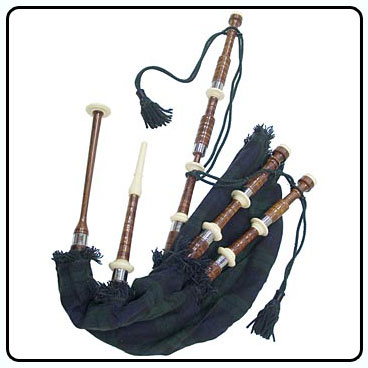

4.2 Аэрогидродинамические излучатели звука
Принцип
действия аэрогидродинамических излучателей звука основан на преобразовании
кинетической энергии струи газа или жидкости в энергию акустических
колебаний.
Сирена
Действие
сирены основано на периодическом механическом прерывании струи газа или
жидкости.
В
пульсирующих сиренах перекрытие
потока движущихся в трубе жидкости или газа производится заслонкой, совершающей
возвратно-поступательное движение. Управление движением заслонки осуществляется
электромеханическим или электромагнитным преобразователем. Основная частота
излучаемого звукового сигнала при этом равна частоте движения
заслонки.
Схема устройства вращающейся сирены приведена на рисунке.
Сжатый
воздух от компрессора подается в камеру 2 высокого давления; в камере на
оси электромотора вращается ротор сирены 3 – диск, по краю которого расположено
большое количество отверстий; неподвижный диск - статор 4 с отверстиями отделяет
камеру высокого давления от окружающей среды. При равномерном вращении ротора
его отверстия периодически совпадают с отверстиями статора. В эти моменты
происходит выброс сжатого воздуха, что и приводит к возбуждению звука.
Частота
звука определяется числом отверстий ротора (и статора) m
и частотой вращения n:
f
=
m·n.
Поскольку при запуске сирены частота вращения ротора постепенно нарастает, основной тон звучания сирены меняется от
низкого до некоторого стационарного высокого. При выключении сирены наблюдается
обратный процесс.
Частотный диапазон, в котором работают сирены, очень широк: от 200-300 Гц до 80-100 кГц. Мощность излучения достигает десятков киловатт.
Послушаем:
Сирена
Свисток
Устройство свистка схематически изображено на рисунке.
Воздух, вдуваемый в щелевое сопло 1, разбивается острой кромкой 2 резонансной камеры 3 на два потока: один (основной) выходит в окружающую среду, а другой попадает в резонансную камеру, повышая в ней давление. Через определенные промежутки времени, зависящие от размеров камеры и скорости вдувания воздуха, давление в камере возрастает настолько, что основной поток воздуха перекрывается. Вследствие этого возникают периодические сжатия и разрежения воздуха, распространяющиеся в виде звуковых волн. Мощность излучения свистков обычно около 1 Вт.
Послушаем:
Свисток
Духовые
музыкальные инструменты
Основной частью духовых музыкальных инструментов является труба (или трубы), заполненная воздухом. Так же, как у струны, колебания воздуха в трубе можно представить в виде суммы гармонических составляющих (собственных колебаний).
Колебания, соответствущие основному тону (а) и первому обертону (б) для открытой с обоих концов трубы, представлены на рисунке:
Частоты собственных
колебаний определяются длиной трубы L,
скоростью звука в воздухе с и
граничными условиями на концах трубы. Для
открытой с обоих концов трубы частоты собственных колебаний определяются
соотношением:
(m = 1, 2, 3 …) .
Видно,
что чем длиннее труба, тем ниже ее звук.
Колебания в трубе можно возбуждать по-разному, например, направляя струю воздуха поперек отверстия трубы. В зависимости от скорости струи воздуха энергия перераспределяется между гармониками, определяя тембр звука.
В духовых музыкальных инструментах тембр зависит также от материала (металлические и деревянные духовые), размеров и формы инструмента.
Послушаем:
Труба
Флейта
Волынка

Орган
Аэрогидродинамические
шумы
Аэрогидродинамические
шумы можно разделить на две основные группы:
1)
Шумы,
связанные с периодическим выбросом газа в атмосферу. Источниками таких шумов
являются работающие насосы, компрессоры, двигатели внутреннего сгорания и тому
подобное.
2)
Шумы,
возникающие из-за образования вихрей у твердых границ потока. К ним относится, в
первую очередь, шум, образующийся из-за срыва вихрей при обтекании потоком
воздуха или жидкости движущихся тел (автомобилей, поездов, самолетов и так
далее).
Особым видом аэродинамического шума являются ударные волны, возникающие при преодолении самолетами звукового барьера скорости.
Послушаем:
Компрессор
Вентилятор
< Предыдущая Оглавление Следующая
>